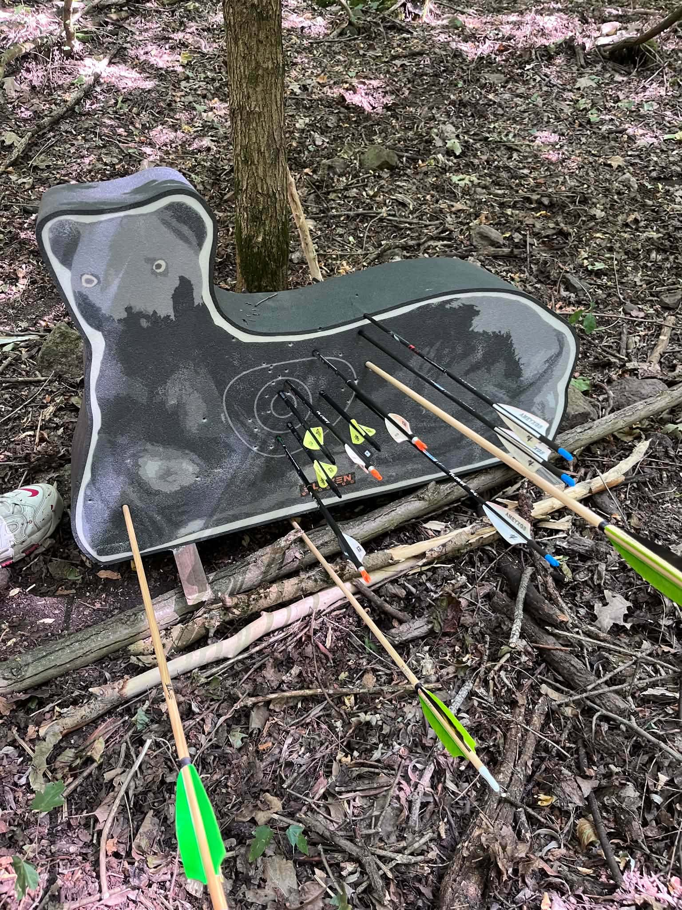

1. Szurdok Íjasz verseny
Tisztelt Résztvevők, Kedves Íjásztársak és Támogatóink!
Szeretnénk hálásan megköszönni mindenkinek, aki megjelent és jelenlétével megtisztelte az I. Szurdok Íjászviadalt. Külön öröm és hatalmas büszkeség számunkra, hogy ilyen szép számmal vettetek részt a rendezvényen, és megtöltöttétek élettel a pályát.
Mivel ez volt az első versenyünk, mi is folyamatosan tanulunk. Az elkövetett hibákból és tapasztalatokból építkezni fogunk: ígérjük, hogy a következő megmérettetésre mindent megteszünk a javításukért. Célunk, hogy legközelebb egy még gördülékenyebb, még élvezetesebb és színvonalasabb versenyt szervezzünk nektek.
Külön köszönettel tartozunk önzetlen támogatóinknak és segítőinknek, akik nélkül ez a nap nem jöhetett volna létre:
• Köszönjük Pintér Ervin Miklósnak és Kiss Imrének, hogy hozzájárultak a finom ételek alapanyagaihoz.
• Hálásak vagyunk Kisné Pintér Anett és családjának Pintér Józsefnének és Kovács Ferencnének, akik a fenséges bográcsételt készítették el nekünk. És Pálokné Bakos Erikának a finom süteményekért.
• Köszönjük Bakos Józsefnek, aki a szükséges eszközöket és padokat biztosította számunkra.
• A pálya építésében az egyesület több tagja is rengeteget segített, külön köszönjük a kitartó munkát Bessenyei Lászlónak, Kassai Dorottyának, Szentgyörgyi Lászlónak, valamint Szircsák Róbertnek és családjának.
Kiemelt hálával tartozunk Kovács Barbara és családjának a központ biztosításáért, és az Egererdő Zrt.-nek, https://www.egererdo.hu/ amiért biztosította számunkra a csodálatos helyszínt, és lehetővé tette, hogy ebben a környezetben rendezhessük meg a viadalt.
Jó hír, és külön köszönet hogy Gáspár Adrienn a versenyen készült fényképeket már válogatja! Hamarosan érkeznek a képek, amiket fel fogunk tölteni ide a Facebook oldalunkra https://www.facebook.com/profile.php?id=61560616876903 , valamint az Archy.hu felületére is, így mindenki felidézheti a nap legjobb pillanatait.
Köszönjük a bizalmat és a sportszerű versenyzést, találkozunk a következő Szurdok Íjász Viadalon!
Sporttársi üdvözlettel,
Kovács Tamás
Szurdokpüspöki Hagyományőrző Íjász Egyesület
Ui.: Ízelítőnek pár kép mielőtt érkezik a maradék kb.800 kép